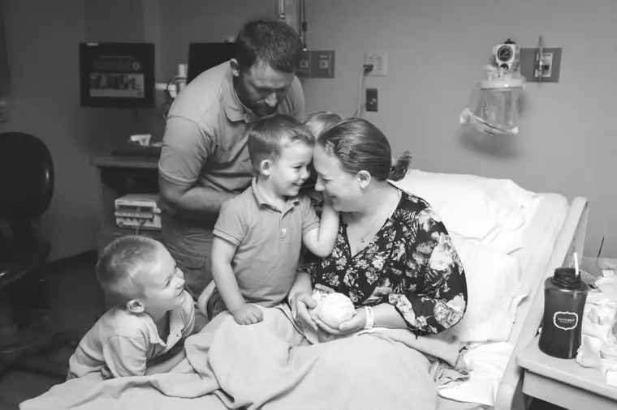

FARGO — At the funeral Mass of little Ruby Faustina Schultz, the Rev. Kyle Metzger of Sts. Anne & Joachim Church noted that her whole life had been lived during the Year of Mercy.
The Extraordinary Jubilee Year of Mercy, which began Dec. 8 and concludes Nov. 20, was set aside by Pope Francis earlier this year as a special time to focus on the mercy of God.
This reality has brought comfort to grieving parents Sara and Steve Schultz, who lost Ruby in utero at 27 weeks on Aug. 25.
But it wasn’t until after her death that the Fargo couple discovered just how fitting their choice in names had been — a moment Steve describes as “a chills moment.”
The couple recalls the panicked words of Sara as she labored to bring into the world a child whose life-lit eyes she would never see.
“It’s not supposed to be today,” she’d said.
But Ruby knew otherwise, and soon, so would her parents.
In recent years, the family had become devoted to Saint Maria Faustina Kowalska, a Polish nun who promulgated the divine mercy of Jesus. They chose their only daughter’s name based in part on Sara’s grandmother Ruby, and on their affinity toward the saint.
So when Sara’s colleague mentioned later that Ruby Faustina’s birthday coincided with her patron saint, who was born 111 years earlier, Steve recounts, her jaw dropped.
“Divine Mercy is a big part of my life,” Sara says, expressing how the confluence has helped her and Steve’s healing.
It’s among many “little miracles” associated with their daughter’s life and death, the couple says.
Others include the gift of being able to deliver Ruby vaginally, after three previous C-sections, and finding an appropriate casket.
When someone had suggested they use a Tupperware container, Sara broke down, crying, “She’s not leftovers.”
Ruby herself led them to the right vessel, they say; a tiny, wooden coffin hand-crafted by a man from the Grafton area that could aptly hold a small body only 1 pound, 7 ounces and 31 centimeters in size.
A mother laments
Ruby’s life was claimed by complications from Trisomy 18 — a condition one doctor described as “a mix-up of the recipe” — which only 50 percent of children survive to birth, and even fewer to their first birthday.
When learning these near-tragic odds while pregnant, Sara says, she was “like the walking dead.”
“I cried a lot, and I couldn’t concentrate on anything,” she says.
Caring for her three young boys seemed impossible, she says, recalling how she almost let them eat marshmallows for supper one evening when nothing seemed to matter.
The couple also struggled with telling their sons their sister might not make it.
“At night, we would pray for the baby, but we didn’t tell them anything because we didn’t know how,” Sara says. “We were waiting for someone to tell us how to do it.
But when Ruby’s heart stopped beating, there was no choice. Thankfully, they say, a children’s specialist at Sanford Health helped them relay the news, and friends and family also swooped in to assist.
Though she dreaded the funeral at first, Sara says, it ended up being soothing, “a physical representation of the love and care of Jesus.”
She was especially touched by a friend she hadn’t seen in years who drove from Minneapolis to grieve with the family, and hearing from others who’d been through something similar.
“I remember telling Steve, ‘How are we supposed to get through this and be OK again?’ ” Sara says. “So to hear, from those who’d experienced it, ‘It’s hard, but it gets easier, it gets different, you’ll be OK’ … that was so important.”
Healing has been ongoing, however. At one point, Sara says, she had a stern conversation with God after praying, “Jesus, I trust in you,” without feeling anything. “I said, ‘There, I said it, but I don’t feel it, and you know I don’t, but I’ll keep saying it until I do.’ ”
Slowly, the beauty of their daughter’s short life has overcome some of the sadness, they say, noting that Ruby is always with them.
Help in the hospital
Pauline Savageau, a registered nurse at Essentia Health’s birthing center, considers it a privilege to help families with pregnancy and infant loss, and makes sure they’re not rushed.
“I think we do a pretty good job of gently telling them what’s going to happen, then allowing them time to absorb that and ask questions,” she says.
Staff carry the babies and call them by name, inviting parents to help bathe and dress them if they want to. They’re also encouraged to hold them as much as they can when they’re ready.
“We don’t separate (the babies) like we used to by bringing them into the nursery,” she says.
Often, the nurses will take photos, Savageau says, since family members frequently yearn for these tangibles, even if not right away.
The hospital also can provide footprint and handprint molds, make arrangements for professional photography sessions and contact funeral homes.
“What happens in the hospital is a very vital part of their healing,” Savageau says.
Additional local resources
• Harlynn’s Heart: www.harlynnsheart.org
• Benton’s Hope: bentonshope.org/about-us
• Finding Hope Ministries: www.facebook.com/findinghopem